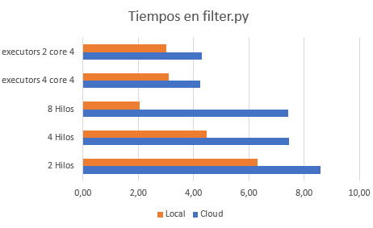
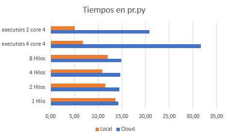

Recomendador
de anime
En esta página describiremos nuestro proyecto basado en un recomendador de anime que proporciona el usuario el que más le puede gustar en función de diversos criterios.

En esta página describiremos nuestro proyecto basado en un recomendador de anime que proporciona el usuario el que más le puede gustar en función de diversos criterios.
Siempre que acabamos un anime estamos pensando en cual será el siguiente, lo cual nos lleva mucho tiempo hasta encontrar uno que nos pueda gustar. Aún así, incontables veces empezamos uno pensando que puede ser interesante, pero lo dejamos a medias porque no nos engancha. Para solucionar esto y poder encontrar qué ver más rápido y con más eficacia vamos a desarrollar una aplicación que en función de los gustos del usuario pueda recomendarle un anime que le vaya a gustar.
Necesitamos el Big Data debido a que nuestros archivos son muy pesados (llegando alguno a pesar X GB) y para procesar más eficientemente toda la información que tenemos en cuenta, como el género del anime, su rating, su estudio...
Los datasets que hemos utilizado para desarrollar nuestra aplicación son:
Nuestra aplicación trata sobre un recomendador de anime que proporciona al usuario el anime que más le puede interesar en función de varios criterios que el usuario introduce previamente. Los criterios para realizar la búsqueda son género, source (de donde vienen el anime, es decir de un libro, una novela, etc), rating (Pegi de edad) y el estudio que anima dicho anime. Para hacer la recomendación vamos a buscar entre los miles de usuarios que tenemos, aquellos que más animes hayan visto que coincidan con las caraterísitcas que pide el usuario. Esto es interesatne ya que, si le mostramos los 5 animes que más le han gustado al usuario que más animes de ese estilo ha visto, probablmente sean del agrado del usuario que está utilizando nuestra aplicación (para ver cuales son los 5 que más le han gustado, cogemos los 5 que tienen un score más alto puesto por ese usuario).
No hemos podido comparar con otras aplicaciones similares, ya que no hemos encontrado ningún recomendador de series o animes con código fuente disponible.
La infraestructura que hemos empleado para desarrollar nuestra aplicación es:
Para poder ejecar nuestra aplicación es necesario instalar cuatro módulos que usamos, que son PySpark, OS, Pandas e Inquierer. Además, es necesario tener instalado Java y actualizar la variable PATH en el fichero ~/.profile y en nuestra sesión actual. Todos los comandos necesarios para realizar estos procesos se explican con más detalle en el README.md de nuestro repositorio.
Para obtener las siguientes gráficas hemos ejecutado "filter.py" y "pr.py" tanto en Google Cloud como en local para ver la diferencia de tiempos.
Los resultados que hemos obtenido ejecutando filter.py son los siguientes (en minutos):
Los resultados que hemos obtenido ejecutando pr.py son los siguientes (en segundos):
Estas gráficas han sido realizadas en Excel y la máquina usada en local dispone de ....
Observando las gráficas del apartado anterior se puede llegar a la conclusión de que para "filter.py" local[] en Google Cloud es muy lento, ya que necesita estar abriendo el bucket constantemente por como está hecho el programa. En local, local[] con ocho threads es la más rápida con diferencia, ya que al contrario de lo anterior, no tiene el retardo de acceder al bucket. Con executors y cores no hay mucha diferencia entre los dos. Como detalle, comentar que cada vez que se quiera hacer un filter se necesita ejecutar el "user.py".
Observando la gráfica para "pr.py", se puede ver que la mayor diferencia ahora se encuentra para los executors y cores, habiendo muy poca diferencia en los hilos. Aún así, la mejor opción en es local con executors 2 core 4.
Las dificultades que nos hemos encontrado en el desarrollo de la aplicación son ...Además, algunas optimizaciones que se podrían llevar a cabo son:
Gracias a nuestra aplicación, un usuario que quiera saber un anime que ver y no tener que estar probando cuales le pueden gustar o no, podrá ahorrar mucho tiempo en ello. Tan solo tras obtener el resultado de nuestra aplicación tendrá a su disposición animes de su agrado en base a sus gustos.
Gracias a haber desarrollado esta aplicación hemos aprendido muchos aspectos interesantes del Big Data y muchas de sus posibles aplicaciones en aspectos del día a día. Algunos aspectos que se podrían mejorar como próximos objetivos serían ... Como último detalle, indicar que los enlaces a los datasets y al repositorio se encuentran en los apartados de "Datos utilizados y su descripción" y "Cómo usar el código" respectivamente.